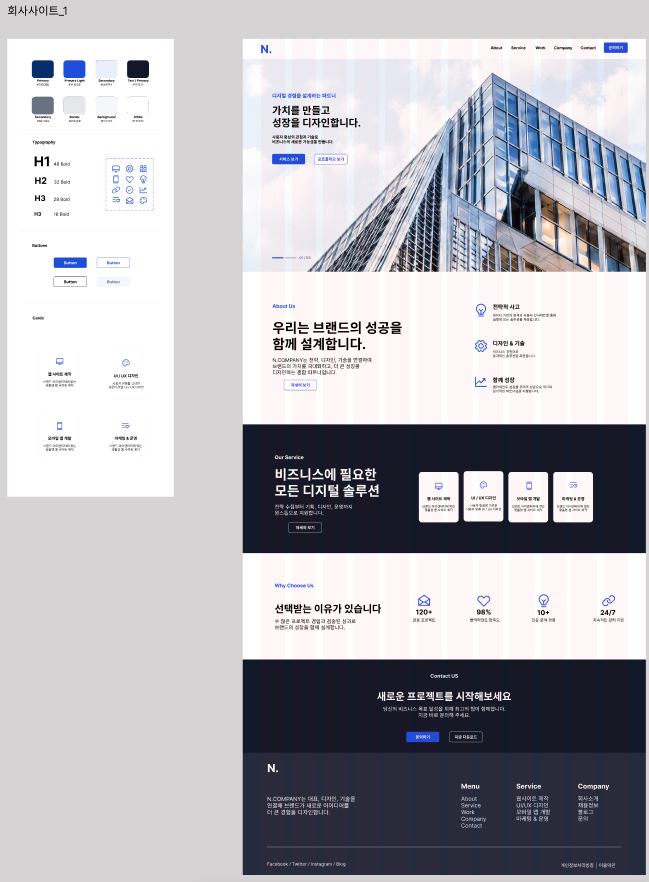
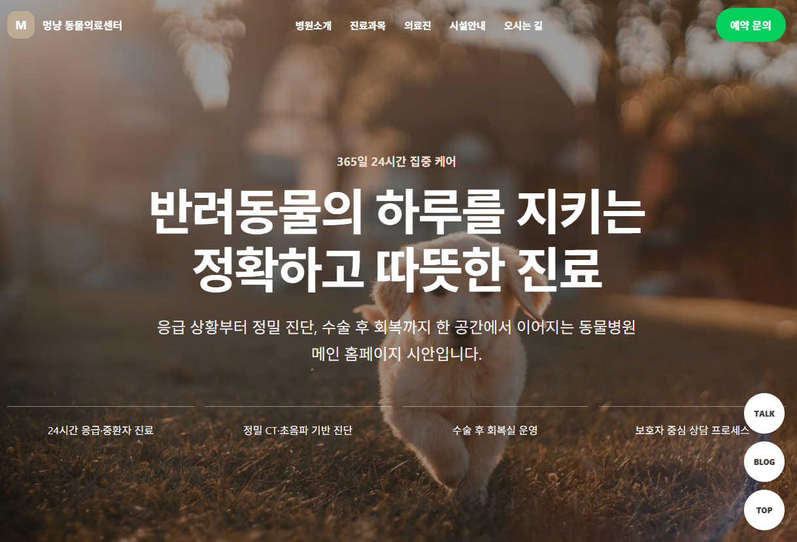
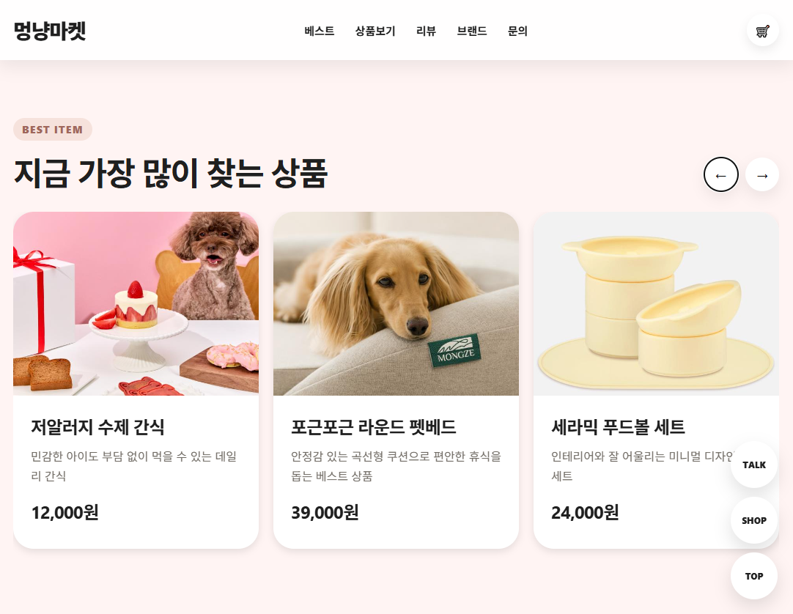

Beep Calculator 🔊
버튼을 누를 때마다 사운드가 재생되는 인터랙티브 계산기입니다.
실제 계산기처럼 디자인하였으며,
계산 기능과 함께 입력 피드백을 주는 UI를 구현했습니다.
About
인터랙션 중심 프로젝트부터 웹사이트까지
HTML, CSS, JavaScript, React로 구현한 작업들을 정리했습니다.
Figma
기업의 첫인상이 명확하게 전달되도록 메인과 섹션 구성을 설계했습니다.
컬러, 타이포그래피, 버튼 스타일 등 기본 디자인 요소를 정리하고,
실제 웹사이트로 확장 가능한 회사소개서 시안 형태로 제작했습니다.

Web Publishing
병원 소개와 진료 정보를 직관적으로 전달하는 반응형 웹사이트입니다.
첫 화면에서 핵심 메시지가 바로 보이도록 구성하고,
정보 안내 섹션을 깔끔하게 정리해 사용 흐름이 자연스럽게 이어지도록 구현했습니다.


Web Publishing
상품을 편하게 둘러볼 수 있도록 구성한 반응형 반려동물 쇼핑몰 웹사이트입니다.
배너, 카테고리, 상품 카드, 리뷰 섹션을 배치해
쇼핑몰 특유의 탐색 흐름이 자연스럽게 이어지도록 화면을 구현했습니다.
Interactive Front-end
사용자가 직접 질문과 선택지를 만들고,
공유 링크로 테스트를 전달할 수 있는 인터랙티브 퀴즈 프로젝트입니다.
URL 파라미터를 활용해 문제 데이터를 공유하고, 응답 결과에 따라 점수를 계산해
재미있는 테스트 흐름을 구현했습니다.

Interactive Front-end
Y2K스타일의 포토부스입니다. 다양한 스티커를 배치해 꾸민 뒤
완성된 이미지를 저장할 수 있습니다.
MediaDevices API로 실시간 카메라 영상을 가져오고,
드래그 배치와 Canvas 합성을 통해 결과 이미지를 저장할 수 있도록 구현했습니다.


Interactive Front-end
이와이 슌지 영화의 분위기에서 착안한 산성비 스타일 타이핑 게임입니다. 떨어지는 단어를 입력해 제거하는 구조를 만들었고, 게임 루프, 점수 반영, 상태 변화에 따른 화면 업데이트를 구현했습니다.
Mini Projects
Contact
화면 구조를 설계하고 구현하는 과정을 좋아합니다.
앞으로도 사용자가 자연스럽게 이해하고 경험할 수 있는 인터페이스를 꾸준히 만들고 싶습니다.